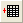

Öffnet das Dialogfeld Grafikfenster auswählen.
Öffnet das Dialogfeld Worksheet auswählen.
Verwenden Sie die Schaltflächen auf der Symbolleiste Layout, um in Ihre Layoutseite Diagramm- oder Worksheetbilder einzufügen.
|
Öffnet das Dialogfeld Grafikfenster auswählen. |
|
|  |
Öffnet das Dialogfeld Worksheet auswählen. |
Weitere Informationen lesen sie bitte im Abschnitt: Hinzufügen eines Grafik- oder Worksheet-Bilds zum Seitenlayoutfenster